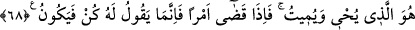
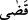

insanoğlunun yaratılışının başlangıcından hayatının sonuna kadarki safhaları söz konusu
etmektedir. Bu bakımdan esasen “hesap günü” bile denilebilir. Çünkü insanoğlunun asıl
yaratıldığı maksad ve hâllerinin keyfiyetinin ölçüleceği vakit budur.
“Umulur ki düşünürsünüz.” Yani, bir sahadan ötekine, ötekinden berikine geçip
durmanızdaki envâ-i çeşit ibret ve hikmet üzerinde düşünüp bütün güç ve kudretleri
yaratan bir Yaratıcının varlığı fikrine erersiniz.
68. O, hem dirilten hem de öldürendir. O, herhangi bir işin olmasını dilediği zaman
yalnız «Ol!» der, o da oluverir.
“O, hem” ölüleri rahimlerde ve yeniden diriliş gününde “dirilten hem de” canlıları
gerek ecelleri geldiğinde gerekse sorgu suâlden sonra kabirde “öldürendir.”
Yine, ölü kalpleri rubûbiyyet ve lütuf nuruyla dirilten ve kalpleri kahır ateşiyle
öldüren de O’dur. Şu kadar var ki, kalb dirildiği zaman nefis ölürken, kalbin ölümüyle
nefs canlanır. Ebu’l-Hüseyn Nûrî (k.s.) şöyle der: Bakışıyla kâinâtı dirilten de O’dur.
Öyle ise her kim O’nunla ve O’nun bakışıyla dirilmiş olmazsa, hareket etse ve konuşsa
da aslında ölüdür. Bir mısra:
Allah’ın nuruyla aydınlanmış gönül ne güzeldir.
“O, herhangi bir işin olmasını dilediği zaman…” Burada “, takdir etmek
mânâsındadır. Bu fiil kullanılarak onun ayrılmaz parçası olan “var etme irâdesi”
kasdedilmiştir. Bir nevi şöyle demiş olmaktadır: O bir şeyi takdir edip var etmek
isterse, ona sadece “Ol” der, o da, başka herhangi bir şeye muhtaç olmaksızın hemen
oluverir. Yani;
O’nun yaratması için âlet ve edevâta ve fırsata ihtiyaç yoktur.
Fiili için kusur ve illet olmayan, hiçbir âlete ihtiyaç duymaz.
“Kâf”ın büklümü ve “nûn”un kıvrımından her zaman bir şekil ortaya çıkardı. Bu ifade,
bir şey istemesi durumunda Allah Teâlâ’nın gücünün “güce konu olan” şeylerde ne
kadar tesirli olduğunu gösteren bir temsildir. Yine bu, varlıkların, aslında ortada böyle
bir emir ve emre muhatap olacak biri bulunmadığı halde, Cenâb-ı Hakk’ın var etme
irâdesine ne denli hızlı bir şekilde riâyet ettiklerini anlatan bir tasvîrdir.
Bazı müfessirler ise bu ifâdenin hakîkat anlamında olduğunu ve Allah’ın varlıkları bu
“Ol!” emriyle var ettiği görüşündedirler. Şöyle ki: Allah Teâlâ seslerden ve harflerden
oluşan hadis bir kelâm ile değil, ezelî kelâmıyla “Ol!” yâni “Meydana gel!” der; o da
olur yâni ortaya çıkar. Peki, “olmayan bir şeye nasıl emredilebilir?” sorusuna şöyle